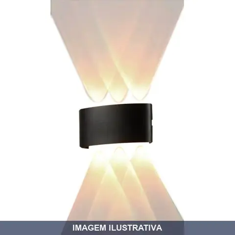
ARANDELA LED PAREDE EXTERNA/INTERNA 4000K 300LUMENS NOLL
Arandela LED para iluminação de parede, adequada para uso em ambientes internos e externos. Potência de 12W com temperatura de cor neutra 4000K e fluxo luminoso de 300 lumens. Ideal para iluminação complementar de áreas residenciais e comerciais.

ARANDELA LED PAREDE EXTERNA/INTERNA 4000K 450LUMENS NOLL
Arandela LED para instalação em parede, adequada para ambientes internos e externos. Potência de 12W com temperatura de cor 4000K (branco neutro) e fluxo luminoso de 450 lumens. Indicada para iluminação de fachadas, entradas, corredores e áreas de circulação.
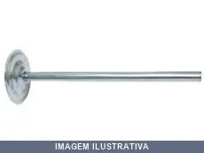
BRACO TEMPO RETO ENERLUX
Indicação de Uso: Braço fixo reto para instalações de luminárias, spots e acessórios de iluminação em ambientes internos e externos. / Material e Resistência: Construído em material resistente à corrosão. / Vantagem Prática: Permite posicionamento direto e estável de equipamentos de iluminação em superfícies variadas.
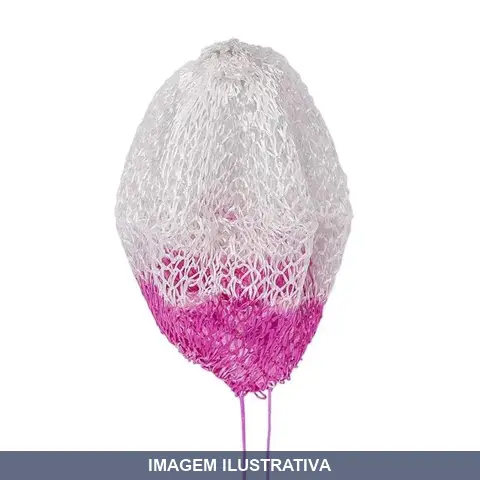
CAMISA LAMPIAO GAS COM KALA
Indicação de Uso: Acendimento e funcionamento de lampiões a gás. Material e Resistência: Tecido em malha reticulada, próprio para resistir ao calor da chama. Vantagem Prática: Reposição em conjunto com duas peças, reduzindo necessidade de compras adicionais.
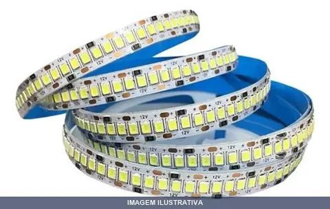
FITA LED IP20 6500K COM BRANCA JNG
Indicação de Uso: Iluminação decorativa e funcional em ambientes internos, sob proteção contra respingos. Material e Resistência: Fita flexível com diodos emissores de luz (LED) branca fria, alimentada por tensão contínua de 12V, apropriada para áreas secas. Vantagem Prática: Instalação em superfícies planas, consumo reduzido de energia e longa durabilidade dos LEDs.

FITA LED IP20 COM COLORIDA GRB JNG
Fita LED JNG IP20, tensão 12V CC, tecnologia RGB com 60 LEDs por metro, potência de 5W/m, tipo 5050. Proteção IP20, adequada para uso em áreas internas. Flexível e fácil de instalar, permite múltiplas cores através de controle remoto compatível. Material: fita adesiva dupla face. Ideal para decoração de ambientes, iluminação personalizada e projetos criativos.
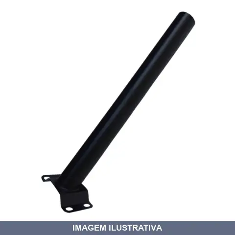
HASTE DE PAREDE PARA LUMINARIA LED SOLAR NOLL
Haste de parede para fixação de luminárias LED solar Noll. Suporte em tubo redondo com acabamento adequado para instalação em superfícies verticais. Acompanha parafusos e buchas para fixação. Compatível com luminárias LED solar de parede da linha Noll.
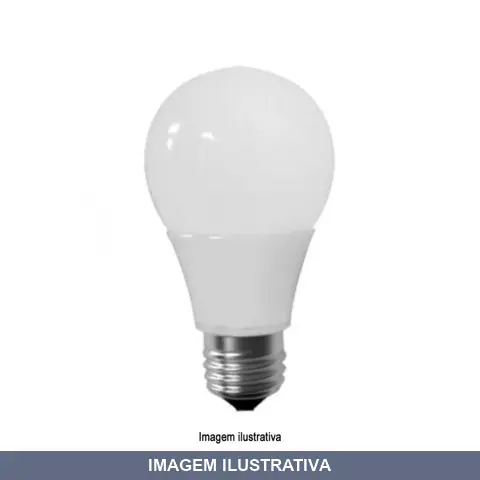
LAMPADA BATERIA 12VX NOLL
Indicação de Uso: Iluminação portátil em ambientes onde não há acesso à energia elétrica convencional, ideal para trabalhos em campo, emergências e atividades noturnas. Material e Resistência: Estrutura resistente adequada para uso em condições adversas. Vantagem Prática: Alimentação por bateria de 12V proporciona autonomia e mobilidade sem necessidade de conexão à rede elétrica.
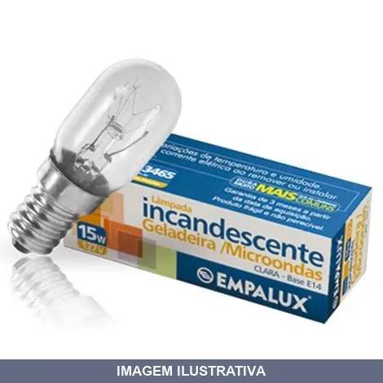
LAMPADA INCANDESCENTE 015WX E14 GELADEIRA FOGAO MICRONDA
INC GELADEIRA E MICROONDAS 127V 15W E14 REF ANTERIOR: IG11511
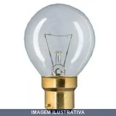
LAMPADA INCANDESCENTE 015WX E27 GELADEIRA FOGAO MICRONDA
Lâmpada incandescente com rosca E27, projetada para iluminação geral em ambientes residenciais e comerciais. Tensão nominal de 127V. Proporciona iluminação aquecida e tradicional para luminárias padrão compatíveis com rosca E27.

LAMPADA LED 70 W E-27 BIVOLT EMPALUX
DESATIVADO 30/07/21 - PRODUTO NAO SERA MAIS VENDIDO BULBO LED 70W BIVOLT 5.000K ALUMINIO E27

LAMPADA LED BIVOLT EMPALUX
Indicação de Uso: Ambientes residenciais, comerciais e áreas externas. Material e Resistência: LED com vida útil de 25.000 horas (L70), operação em temperatura ambiente de -20°C a 40°C. Vantagem Prática: Fluxo luminoso de 550 lumens com temperatura de cor 6.500K (luz branca), baixo consumo de energia, soquete E27 compatível com a maioria dos lustres e luminárias.
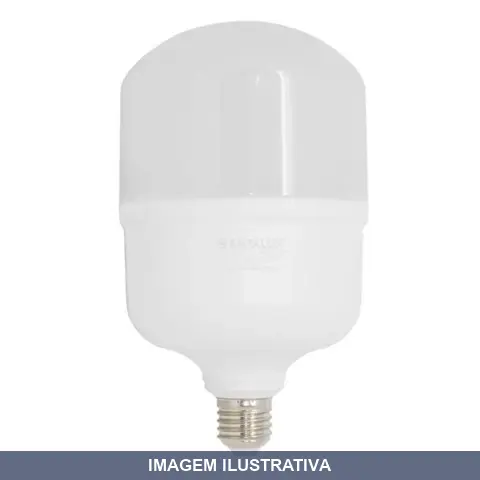
LAMPADA LED E- BIV EMPALUX
Lâmpada LED 40W com base E-27 bivolt. Indicada para iluminação geral de ambientes internos em residências e comércios. Material com tecnologia LED que reduz consumo de energia em relação às lâmpadas incandescentes tradicionais. Compatível com soquetes E-27 padrão.
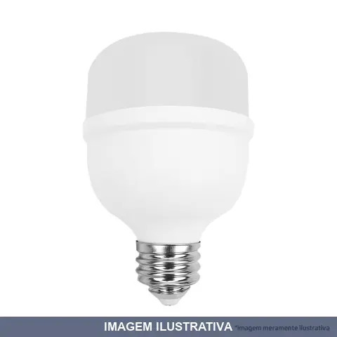
LAMPADA LED E- BIVOLT EMPALUX
Lâmpada LED 40W com base E-40, alimentação bivolt. Indicada para iluminação geral em ambientes internos e externos. Tecnologia LED oferece durabilidade e eficiência energética em comparação a lâmpadas convencionais. Compatível com soquetes padrão E-40.
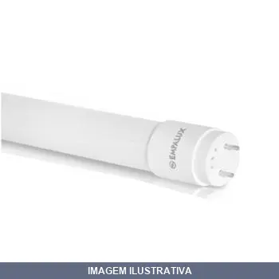
LAMPADA LED TUBULAR T8 BIVOLT
Lâmpada tubular LED T8 com tecnologia de estado sólido, tensão bivolt compatível com redes de 127V e 220V. Potência de 10W com fluxo luminoso de 900 lumens em temperatura de cor 6500K (branco frio). Soquete G13 padrão, vida útil de 25.000 horas, IRC superior a 80%. Adequada para áreas comerciais, escritórios e ambientes residenciais. Instalação por conexão direta, sem necessidade de reator eletrônico.

LAMPADA LED TUBULAR T8 HO 6500K EMPALUX
Lâmpada LED tubular para iluminação em ambientes internos. Tecnologia LED com temperatura de cor 6500K (branca fria). Aplicável em luminárias tipo T8. Funciona em sistemas de iluminação residencial, comercial e industrial.
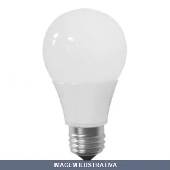
LAMPADA LED WX12 VOLT BATERIA EMPALUX
Indicação de Uso: Iluminação de emergência, iluminação móvel e aplicações em sistemas de 12V com bateria / Material e Resistência: Bulbo LED com base E27, construído para operação em corrente contínua / Vantagem Prática: Eficiência energética e longa vida útil em instalações de baixa tensão alimentadas por bateria.
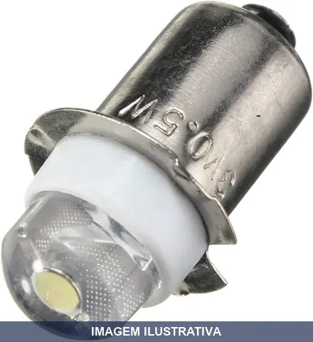
LAMPADA PARA LANTERNA A PROVA DE EXPLOSAO LED
Lâmpada LED de 3 volts para lanternas à prova de explosão. Intensidade luminosa de 55 lumens com acionamento por pino roscado. Possui lente em vidro temperado, resistente a choques térmicos e impactos. Desenvolvida para uso seguro em ambientes com atmosferas explosivas.
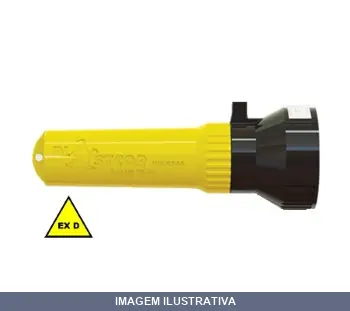
LANTERNA A PROVA DE EXPLOSAO ALUMINIO
Lanterna à prova de explosão com corpo em alumínio, projetada para uso em ambientes com atmosferas explosivas. Atende à norma ABNT NBR IEC 60079-0. Indicação de Uso: Ambientes com risco de explosão. Material e Resistência: Alumínio com proteção contra explosão. Vantagem Prática: Segurança certificada em áreas classificadas.
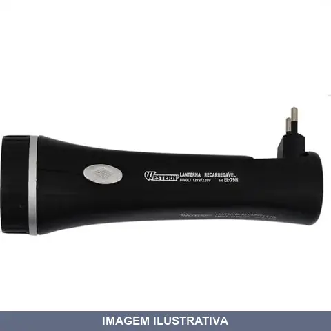
LANTERNA LED 05
Indicação de Uso: Iluminação portátil para ambientes internos e externos, ideal para trabalhos noturnos, inspeções e emergências. Material e Resistência: Construção em plástico resistente com 5 LEDs. Vantagem Prática: Fonte de luz móvel e prática para atividades que exigem iluminação direcionada.
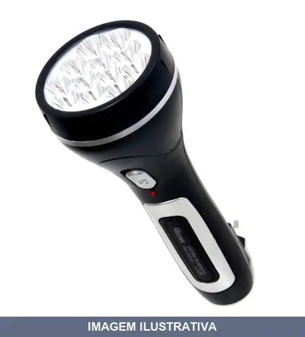
LANTERNA LED 12
Lanterna portátil com 12 LEDs, indicada para iluminação em ambientes internos e externos, trabalhos noturnos, emergências e atividades que exigem fonte de luz móvel. Construção com componentes resistentes adequados para uso doméstico e profissional. Oferece distribuição de luz através de múltiplos pontos luminosos.
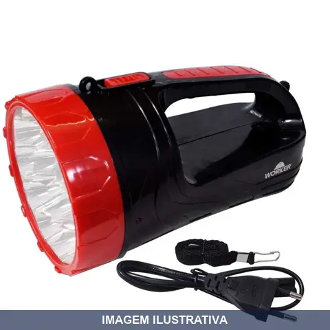
LANTERNA LED 21
Lanterna recarregável com LED de feixe intenso e brilhante. Bateria selada de chumbo ácido 4V 400mAh com autonomia de aproximadamente 8 horas. Dois estágios de iluminação (fraco e forte). Carregador bivolt (127V-220V) incluído. Corpo em plástico ABS resistente.
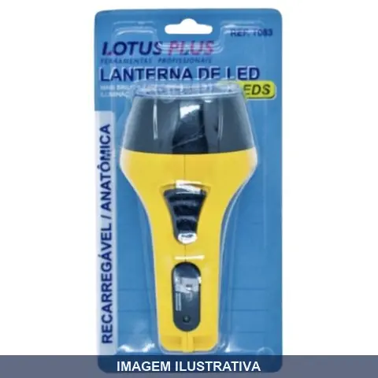
LANTERNA LED ANATOMICA PLUS LOTUS
Lanterna com 7 LEDs, design anatômico ergonômico. Indicada para inspeções, manutenção, trabalhos em ambientes com pouca luminosidade e uso geral. Estrutura resistente adequada para aplicações domésticas e profissionais. Proporciona iluminação portátil e prática para diversas atividades.
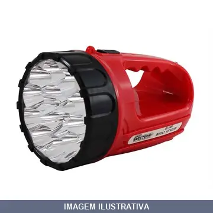
LANTERNA LED COM ALCA WESTERN
Indicação de Uso: Iluminação portátil para trabalhos em locais com pouca luminosidade, inspeções e atividades noturnas. / Material e Resistência: Estrutura em ABS e PS com componentes em liga de zinco, resistente a impactos. / Vantagem Prática: Alimentação por bateria interna recarregável com autonomia aproximada de 8 horas. Interruptor com 2 níveis de intensidade luminosa. Alça integrada para transporte. Disponível em cores sortidas.
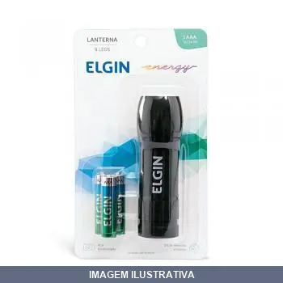
LANTERNA LED COM TRES PILHAS ELGIN
Lanterna de bolso com 9 LEDs e 3 pilhas alcalinas AAA inclusas. Material emborrachado com manuseio facilitado. Emite 100 lúmens. Aprovada pelo INMETRO, com alta durabilidade, econômica, 0% de cádmio e mercúrio. Indicada para emergências, uso em bolsas, carros e ambientes internos.
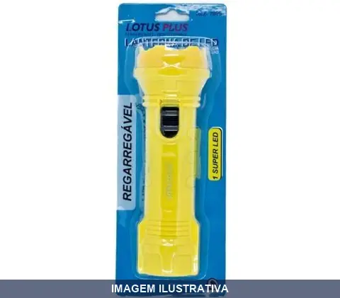
LANTERNA LED COMPACTA PLUS LOTUS
Lanterna compacta com 1 LED de luz branca. Bateria recarregável de íon-lítio com autonomia de 8 a 10 horas. Carregamento via cabo USB. Corpo em termoplástico resistente. Indicada para emergências, trabalho noturno e atividades ao ar livre.
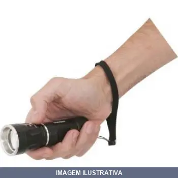
LANTERNA LED LLV1500 VONDER
LANTERNA SUPERLED CREE LLV 1500 VONDER LANTERNA SUPERLED CREE LLV 1250 VONDER FOI SUBSTITUIDA PELA LLV 1500 Indicada para iluminação em geral. Utilizada em camping, residências, entre outros. Não acompanha pilhas. Alto poder de luminosidade, baixo consumo de energia e ajuste de foco
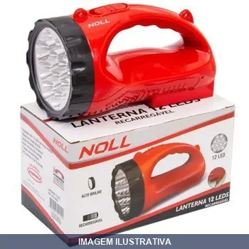
LANTERNA LED REGARREGAVEL NOLL
Lanterna recarregável com alça, equipada com 4 LEDs e COB lateral de 200 lumens. Bateria selada recarregável, alimentação bivolt 127/220V - 50/60Hz. Ferramenta versátil para uso profissional e doméstico.
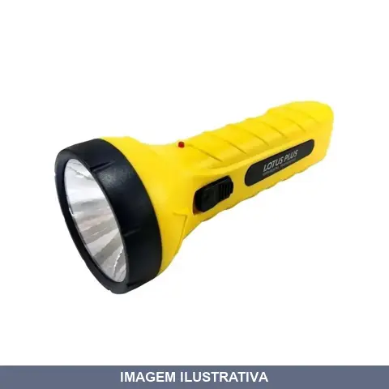
LANTERNA LED SUPER PLUS LOTUS
Indicação de Uso: Iluminação portátil para trabalho noturno, camping e emergências. Material e Resistência: Corpo em termoplástico resistente com LED de alta luminosidade. Vantagem Prática: Bateria recarregável com autonomia de 8 a 10 horas, carregamento via cabo 127/220V, equipamento leve e prático para transporte.
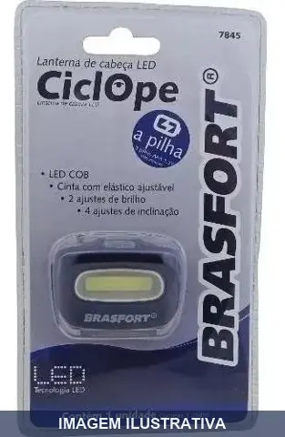
LANTERNA PARA CABECA CICLOPE (3AAA) BRASFORT
Lanterna LED para uso na cabeça, modelo Ciclope. Alimentação por 3 pilhas AAA 1,5V (não inclusas). Corpo em plástico ABS com cinta elástica ajustável. LED COB com 2 ajustes de brilho e 4 ajustes de inclinação. Ideal para ambientes com baixa iluminação, permitindo uso com as mãos livres. Autonomia estimada de 32 horas com pilhas alcalinas novas.
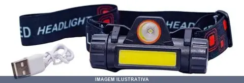
LANTERNA PARA CABECA LED PARA CICLISTA PLUS LOTUS
Indicação de Uso: Lanterna para cabeça LED bicolor para ciclismo, atividades externas, iluminações industriais e pesca noturna. Material e Resistência: Corpo em plástico. Vantagem Prática: Permite ajuste de inclinação de 9 posições diferentes e oferece 3 estágios de luminosidade (luz alta, baixa e intermitente). Cinta elástica ajustável para fixação segura. Funciona com 3 pilhas AAA.
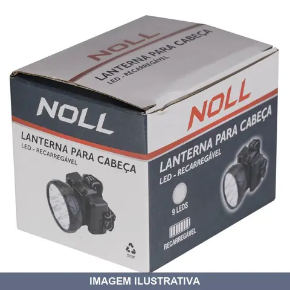
LANTERNA PARA CABECA LEDS NOLL
Lanterna recarregável para uso na cabeça, equipada com 9 LEDs de baixo consumo. Bateria 4V 800mAh com até 10 horas de iluminação. Dois níveis ajustáveis (5 ou 9 LEDs). Bivolt 127/220V - 50/60Hz. Indicada para atividades em ambientes de baixa luminosidade, obra, manutenção e atividades esportivas.
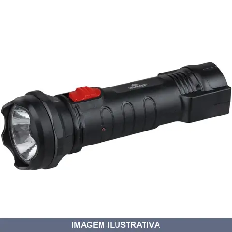
LANTERNA RECARREGAVEL SUPER LED BIV WORKER
Lanterna recarregável com LED de feixe intenso e brilhante. Bateria selada de chumbo ácido 4V 400mAh com autonomia de aproximadamente 8 horas. Dois estágios de iluminação (fraco e forte). Carregador bivolt (127V-220V) incluído. Corpo em plástico ABS resistente.
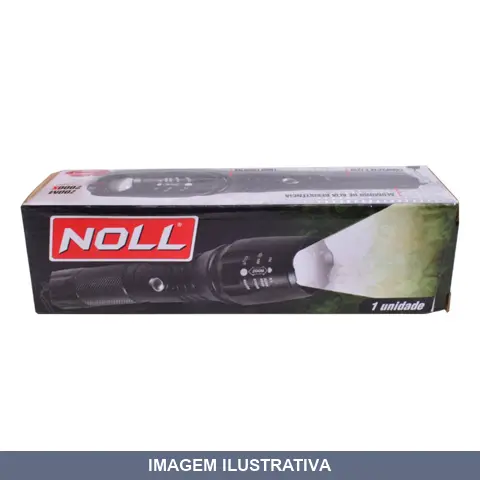
LANTERNA TATICA MILITAR COM ZOOM NOLL
Indicação de Uso: Lanterna para situações táticas, camping, pescaria e atividades profissionais de segurança e exploração. Material e Resistência: Corpo em alumínio de alta resistência, compacta e leve. Oferece 5 modos de iluminação: baixo, médio, alto, SOS e estroboscópico. Alimentação: 3 pilhas AAA ou bateria 18650 Li-ion. Vantagem Prática: Foco ajustável para concentrar ou dispersar o feixe de luz conforme necessidade.
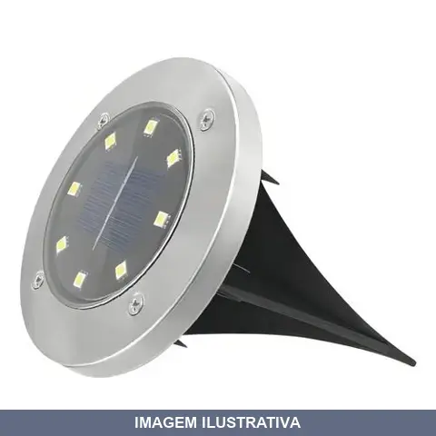
LUMINARIA AÇO ESC. TIPO ESPETO PRETO LED SOLAR NOLL
PP, PC, AÇO INOXIDÁVEL LED: 3W X 8 LEDS BRANCO FRIO BATERIA: 1 X AAA NI-MH 600MAH
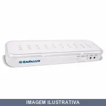
LUMINARIA EMERGENCIA LED 06H IE33005 EMPALUX
ILUMINAÇÃO EMERGENCIA BIVOLT AUT. 30 LEDS 2W 1X1 1AH BATERIA DE LÍTIO AUTONOMIA DE 6 HORAS
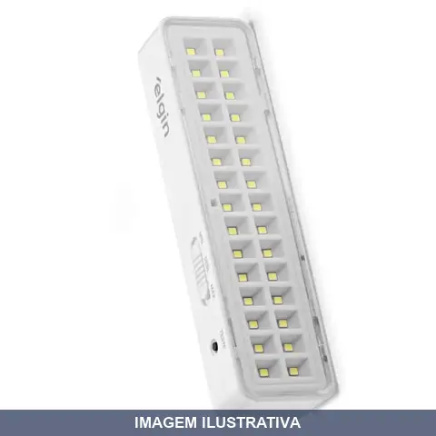
LUMINARIA EMERGENCIA LED ELGIN
Luminária de emergência com 30 LEDs. Indicada para iluminação de ambientes em caso de falta de energia elétrica, proporcionando segurança e visibilidade em saídas de emergência, corredores e áreas comuns. Funciona como fonte de luz alternativa durante interrupções na rede elétrica.
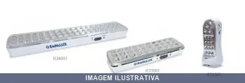
LUMINARIA EMERGENCIA LED IE36001 EMPALUX
Luminária de emergência LED bivolt com 60 LEDs e potência de 2W. Bateria de lítio recarregável com autonomia de até 6 horas em modo econômico ou 3 horas em fluxo máximo. Design compacto com corpo em policarbonato anti-chama e instalação de fácil acesso com plugue ABNT padrão. Indicada para ambientes internos de até 30 m² em residências, escritórios, comércios e áreas de circulação.
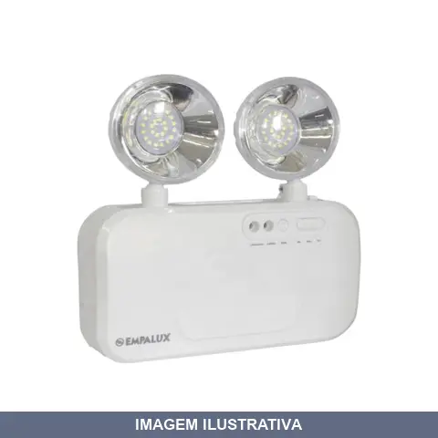
LUMINARIA EMERGENCIA LUMES LED BIVOLT EMPALUX
Indicação de Uso: Iluminação de emergência em ambientes residenciais, comerciais e públicos durante interrupção de energia elétrica. / Material e Resistência: Corpo em plástico, 2 faróis LED, bateria recarregável interna, funcionamento bivolt (100-240V), conforme normas ABNT NBR IEC 60598-2-22. / Vantagem Prática: Acionamento automático ao detectar falha de energia, com autonomia de bateria e recarga pela rede elétrica.
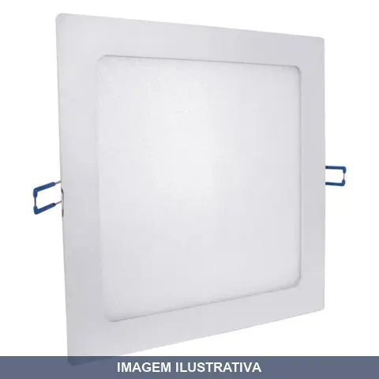
LUMINARIA LED EMBUTIR QUADRADA 6000K EMPALUX
Indicação de Uso: Ambientes residenciais e comerciais como salas, cozinhas, corredores, quartos, banheiros, escritórios e lojas que possuam forro para embutimento. Material e Resistência: Construída em policarbonato e alumínio, com LED integrado. Temperatura de cor 6000K (branco frio). Tensão bivolt automático (100-240V). Vida útil de 50.000 horas. Vantagem Prática: Instalação embutida proporciona acabamento discreto e integrado ao teto. Consumo reduzido de energia elétrica.

LUMINARIA LED EMBUTIR QUADRADA BR6500K
Luminária LED de 18W para embutir em teto ou parede, formato quadrado, com temperatura de cor branca fria 6500K. Indicada para iluminação de ambientes internos residenciais e comerciais. Tecnologia LED proporciona economia de energia e longa durabilidade em relação às lâmpadas convencionais.
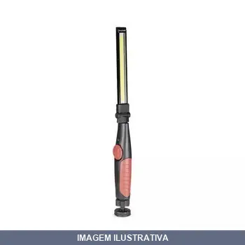
LUMINARIA LED MULTIFUNCAO COM BASE MAGNETICA NOLL
Luminária com tecnologia LED e base magnética. Indicada para iluminação em ambientes internos e trabalhos diversos. A base magnética permite fixação em superfícies metálicas. Material com resistência adequada para uso profissional e residencial.

LUMINARIA LED SOBREPOR QUADRADA 6000K EMPALUX
Luminária LED sobrepor formato quadrado com temperatura de cor 6000K (branco frio). Tensão bivolt (127V-220V). Composição em polietileno e alumínio com LED integrado SMD de alto rendimento. Ângulo de abertura de 140°. Vida útil de 50.000 horas. Instalação de sobrepor, ideal para lajes, tetos de concreto e ambientes sem forro, sem necessidade de recortes. Dispensa obras.
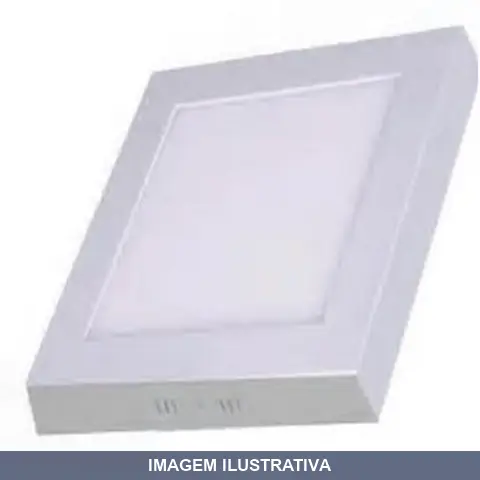
LUMINARIA LED SOBREPOR QUADRADA 6500K ECOLUME
Luminária LED de instalação sobrepor em formato quadrado, com potência de 12W e temperatura de cor branca fria 6500K. Indicada para iluminação geral de ambientes internos como salas, cozinhas e áreas de serviço. Material resistente adequado para uso residencial e comercial leve.
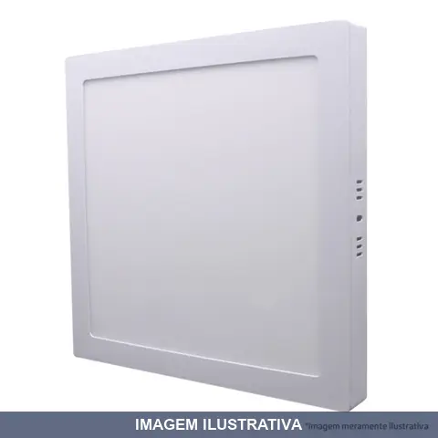
LUMINARIA LED SOBREPOR QUADRADA BR6500K
Luminária LED de 18W para instalação sobrepor em superfícies. Formato quadrado. Temperatura de cor 6500K (luz branca fria). Adequada para ambientes internos que necessitam iluminação direta e uniforme. Tecnologia LED proporciona eficiência energética e durabilidade. Indicada para residências, comércios e áreas de trabalho.
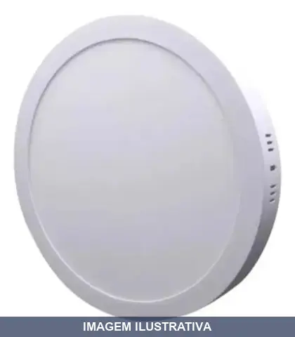
LUMINARIA LED SOBREPOR REDONDA BR6500K
Luminária LED redonda de sobrepor para ambientes internos. Temperatura de cor branca fria 6500K adequada para áreas de trabalho e circulação. Instalação direta na superfície do teto ou parede.
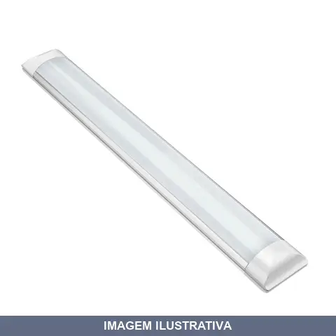
LUMINARIA LED SOBREPOR SLIM BR6500K ELGIN
Luminária de sobrepor em LED com 18W de potência. Indicada para iluminação de ambientes internos, oferecendo temperatura de cor branca fria em 6500K. Tecnologia LED proporciona eficiência energética e longa durabilidade. Instalação em superfícies planas.
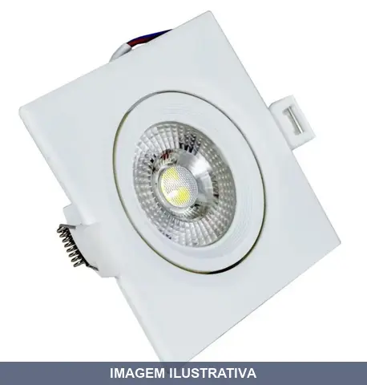
LUMINARIA LED SPOT QUADRADO DIRICIONAVEL BR3000K NOLL
Luminária LED spot de embutir com formato quadrado, sistema direcionável para ajuste de iluminação. Operação 100-240V bivolt, temperatura de cor branco quente 3000K. Corpo em plástico, proteção IP54. Indicado para iluminação focal em ambientes internos comerciais ou residenciais.
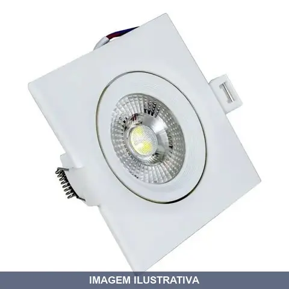
LUMINARIA LED SPOT QUADRADO DIRICIONAVEL BR6500K NOLL
Luminária LED 7W com formato quadrado e direcionável, temperatura de cor 6500K (branca fria). Indicada para iluminação de ambientes internos que requerem foco de luz ajustável, como áreas de trabalho, vitrines e detalhes decorativos. Utiliza tecnologia LED para consumo eficiente de energia.

LUMINARIA LED TUBULAR DE SOBREPOR BR6500K NOLL
Luminária LED tubular de sobrepor, 18W, temperatura de cor 6500K (branca fria). Adequada para iluminação geral de ambientes internos, garagens, áreas de trabalho e comerciais. Tecnologia LED de baixo consumo energético. Instalação em superfície.
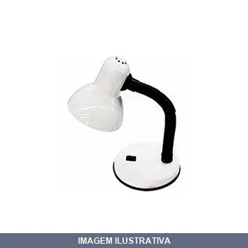
LUMINARIA MESA BRANCA BIV CADS
Luminária de mesa com garra para fixação, cor branca. Bivolt com bocal E27 padrão. Indicada para leituras, digitação e ambientes com pouca luminosidade. Compatível com lâmpadas fluorescente compacta ou LED. Não acompanha lâmpada.
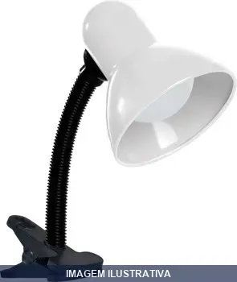
LUMINARIA MESA BRANCA BIV COM GARRA TASCHIBRA
Luminária de mesa Taschibra TLM 05 com garra de pressão. Produzida em plástico e aço com corpo articulável para direcionar a luz. Soquete E27 com potência máxima de 40W. Bivolt com cabo de 950 mm e interruptor. Ideal para áreas de estudo e trabalho.
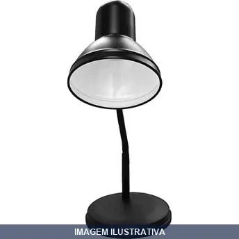
LUMINARIA MESA PRETA BIV CADS
Luminária de mesa com cúpula preta e soquete E-27. Bivolt automático (110V-240V). Dispõe de clip para fixação na mesa e cúpula com direção regulável, adequada para leitura e trabalhos que exigem iluminação.
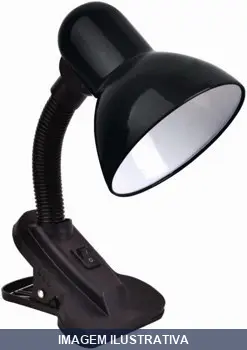
LUMINARIA MESA PRETA BIV COM GARRA TASCHIBRA
Luminária de mesa Taschibra TLM05 com corpo articulável, base em plástico e cúpula em aço. Possui garra de pressão para fixação em qualquer superfície de mesa. Soquete de porcelana compatível com lâmpadas de até 40W. Bivolt automático.
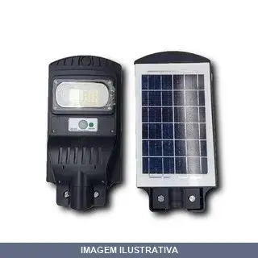
LUMINARIA RECARREGAVEL LED SOLAR POSTE NOLL
Indicação de Uso: Iluminação externa em postes e áreas abertas. Material e Resistência: Proteção IP65 contra água, com sensor de movimento e controle remoto, funcionamento por energia solar. Vantagem Prática: Recarregável via painel solar, funcionamento autônomo sem fios ou acesso à rede elétrica, com acionamento automático por fotocélula ao escurecer.
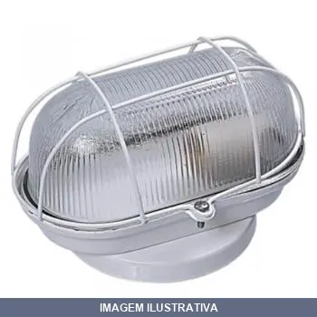
LUMINARIA TARTARUGA BRANCA ILUMI
Indicação de Uso: Iluminação ambiente em espaços internos e externos. / Material e Resistência: Corpo em plástico resistente, tensão 250V. / Vantagem Prática: Design ergonômico em formato de tartaruga, ideal para iluminação decorativa e funcional em áreas residenciais e comerciais.
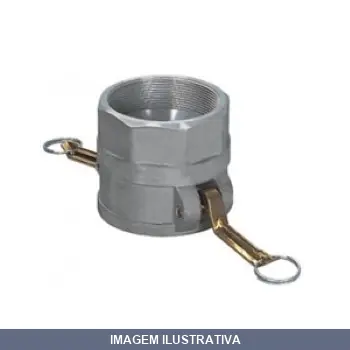
LUMINARIA TUBO LED EX E W CLAS.EX EQS II T6/T5/T4 TELBR
Luminária com tubo LED duplo de 10W cada, classificada para ambientes com atmosfera explosiva (classe EX). Indicada para áreas que exigem segurança em locais com presença de gases ou vapores inflamáveis. Estrutura apropriada para uso em zonas de risco conforme regulamentação de equipamentos elétricos em atmosferas potencialmente explosivas.
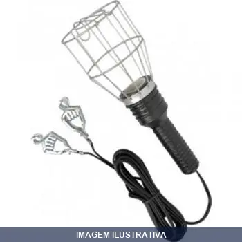
PENDENTE AR GARRA INTERNEED
Pendente de arame com garra para fixação e pino para tomada. Indicado para iluminar locais de difícil acesso ou com baixa iluminação em ambientes de trabalho automotivo. Cabo de energia com comprimento estendido. Suporta diferentes tipos de lâmpadas. Com proteção metálica e garra resistente.
PENDENTE AR PINO INTERNEED
PENDENTE DE ARAME P/ MECANICO COM PINO 5 METROS ENC

PENDENTE DE LED AUTOMOTIVO COM GARRA INTERNEED
Indicação de Uso: Iluminação auxiliar para trabalhos em veículos e ambientes automotivos. Material e Resistência: Construção com LED e garra de fixação robusta. Vantagem Prática: Fixação versátil por garra, permitindo posicionamento flexível em diferentes superfícies durante manutenção e reparos automotivos.
PENDENTE DE LED AUTOMOTIVO INTERNEED
Luminária pendente com LED para uso automotivo. Potência de 28W, cabo de 5 metros com plugue bivolt. Gancho giratório 360° e dois ímãs para fixação em superfícies metálicas. Temperatura de cor 6000-7000K, vida útil de 100.000 horas. Indicado para mecânicos, eletricistas e profissionais que trabalham em locais com baixa iluminação.
PENDENTE DE LED AUTOMOTIVO RECARREGAVEL USB INTERNEED
Pendente LED recarregável com 80 LEDs de alta potência, potência de 20W a 28W, autonomia de 4 horas e temperatura de cor 6000K. Dispõe de gancho rotativo 360° e ímã embutido para fixação em superfícies metálicas. Recarregável via USB tipo DC-5V. Ideal para iluminação em oficinas, garagens, armazéns e ambientes com iluminação insuficiente. Vida útil de 100.000 horas.
PENDENTE PVC PINO INTERNEED
Indicação de Uso: Extensão elétrica com conector pino para iluminação portátil em oficinas, serviços mecânicos e ambientes industriais. Material e Resistência: Cabo em PVC, flexível e resistente a abrasão. Conector tipo pino macho para acoplamento em tomadas de luminária portátil. Vantagem Prática: Comprimento estendido permite alcançar áreas de difícil acesso mantendo a mobilidade do equipamento de iluminação.
PLAFONIER PVC BRANCO
Luminária de teto em PVC branco para ambientes internos. Indicação de Uso: Iluminação residencial e comercial em cozinhas, salas, corredores e áreas de serviço. Material e Resistência: Corpo em PVC resistente a impactos. Vantagem Prática: Instalação simples em teto, compatível com lâmpadas comuns, fácil limpeza e manutenção.
PLAFONIER PVC BRANCO DUPLO PERLEX
Plafonier em PVC branco com soquete duplo, modelo 225/1, da marca Perlex. Possui dois bocais E-27 de porcelana que permitem a instalação de duas lâmpadas simultaneamente de até 60W cada. Tensão bivolt (127V/220V). Indicado para instalação sobrepor em ambientes internos como salas, quartos, cozinhas e corredores.
PLAFONIER PVC BRANCO QUADRADO ENERLUX
Plafonier de formato quadrado fabricado em PVC branco. Indicado para instalação em tetos e forros, com soquete para encaixe de lâmpada. Material em PVC oferece resistência a umidade e facilita a limpeza. Aplicável em ambientes residenciais e comerciais.
PLAFONIER PVC PRETO
PLAFON PRETO 100 WATTS NF 102016 PLAFON PRETO 100W 250V - COM RECEPTACULO IMPORTADO ECONOMICO CAIXA COM 100 PEÇAS
PRATO PARA TEMPO VERDE BEED
Indicação de Uso: Componente de temporizador para painéis de controle elétrico, utilizado em sistemas de automação e controle temporal. Material e Resistência: Acabamento em cor verde. Vantagem Prática: Facilita identificação visual e substituição em manutenção de equipamentos de tempo.
REATOR DRIVER LED PARA LUMINARIA - NOLL
Reator driver eletrônico para alimentação de luminárias LED. Bivolt com entrada AC85-265V/50-60Hz. Fornece corrente constante para manter a emissão de luz estável. Compatível com luminárias de plafon e painel LED. Instalação segura e eficiente.
REATOR ELET W MAR-G
PG 2X40 AF3PP 8 FIOS REATOR ELETRONICO Reator Eletrônico para 2 Lâmpadas de 40W bivolt - Alto Fator - Tubulares - Bornes (Cód.: 16983) Para Lâmpadas: T10/T12 Referência: 2X40 AF3PP - código 10020 - tamanho (2) - Alto fator de potência. - Fluxo luminoso: 0,9 - Baixa distorção harmônica (THD). - Lâmpadas independentes: a queima de uma das lâmpadas não interfere no funcionamento da outra.
![REFLETOR LED BIVOLT 6500K EMPALUX 030W [012940]](fotos/012940.webp)
REFLETOR LED BIVOLT 6500K EMPALUX 030W [012940]
Indicação de Uso: Iluminação de áreas externas como jardins, garagens, fachadas, pátios, estacionamentos e segurança. Material e Resistência: Estrutura em alumínio com acabamento em pintura eletrostática, proteção IP65 ou IP66 contra água e poeira. Vantagem Prática: Temperatura de cor branca fria 6500K; funcionamento bivolt 127V-220V; tecnologia LED com vida útil de aproximadamente 30 mil horas; eficiência luminosa de 75 lm/W.
REFLETOR LED BIVOLT 6500K EMPALUX 050W [004109]
Refletor LED de 50W com tecnologia de iluminação de alta eficiência energética, ideal para iluminação de áreas externas, fachadas, jardins e ambientes comerciais. Bivolt (127V/220V) com temperatura de cor 6500K (branco frio), proporcionando claridade e economia de energia. Corpo em alumínio com design slim. Aplicação: áreas abertas, iluminação de segurança e destaque de estruturas.
REFLETOR LED BIVOLT 6500K EMPALUX 100W [018888]
Indicação de Uso: Iluminação de áreas externas como jardins, garagens, fachadas, pátios, estacionamentos e segurança. Material e Resistência: Estrutura em alumínio com acabamento em pintura eletrostática, proteção IP65 ou IP66 contra água e poeira. Vantagem Prática: Temperatura de cor branca fria 6500K; funcionamento bivolt 127V-220V; tecnologia LED com vida útil de aproximadamente 30 mil horas; eficiência luminosa de 75 lm/W.
![REFLETOR LED BIVOLT 6500K EMPALUX 200W [006072]](fotos/006072.webp)
REFLETOR LED BIVOLT 6500K EMPALUX 200W [006072]
Indicação de Uso: Iluminação de áreas externas como jardins, garagens, fachadas, pátios, estacionamentos e segurança. Material e Resistência: Estrutura em alumínio com acabamento em pintura eletrostática, proteção IP65 ou IP66 contra água e poeira. Vantagem Prática: Temperatura de cor branca fria 6500K; funcionamento bivolt 127V-220V; tecnologia LED com vida útil de aproximadamente 30 mil horas; eficiência luminosa de 75 lm/W.
![REFLETOR LED BIVOLT 6500K EMPALUX 400W [024244]](fotos/024244.webp)
REFLETOR LED BIVOLT 6500K EMPALUX 400W [024244]
Indicação de Uso: Iluminação de áreas externas como jardins, garagens, fachadas, pátios, estacionamentos e segurança. Material e Resistência: Estrutura em alumínio com acabamento em pintura eletrostática, proteção IP65 ou IP66 contra água e poeira. Vantagem Prática: Temperatura de cor branca fria 6500K; funcionamento bivolt 127V-220V; tecnologia LED com vida útil de aproximadamente 30 mil horas; eficiência luminosa de 75 lm/W.

REFLETOR LED BIVOLT 6500K NOLL
REFLETOR POWER LED 30W 6500K COR PRETA SEM SENSOR BIVOLT
SPOT LAMPADA BRANCO JR 01
Indicação de Uso: Iluminação direcionada em ambientes internos, ideal para destacar pontos específicos como quadros e móveis. Não indicado para iluminação geral do ambiente. Material e Resistência: Fabricado em alumínio com acabamento em pintura epóxi. Soquete E27 para lâmpadas eletrônicas. Não enferruja. Vantagem Prática: Canopla redonda com regulagem de direção de luz em 360°, permitindo direcionar o foco conforme necessário.
SPOT LAMPADA BRANCO JR 02
Indicação de Uso: Iluminação direcionada em ambientes internos, ideal para destacar pontos específicos como quadros e móveis. Não indicado para iluminação geral do ambiente. Material e Resistência: Fabricado em alumínio com acabamento em pintura epóxi. Soquete E27 para lâmpadas eletrônicas. Não enferruja. Vantagem Prática: Canopla redonda com regulagem de direção de luz em 360°, permitindo direcionar o foco conforme necessário.
SPOT LAMPADA PRETO JR 01
Indicação de Uso: Iluminação direcionada para ambientes internos, como salas, dormitórios, cozinhas e áreas de serviço. Material e Resistência: Fabricado em alumínio, soquete E27, com canopla redonda e suporta lâmpadas eletrônicas ou LED. Vantagem Prática: Regulagem de direção de luz em 360º, permitindo destacar pontos específicos com iluminação focada.
SPOT LAMPADA PRETO JR 02
Indicação de Uso: Iluminação direcionada para ambientes internos, como salas, dormitórios, cozinhas e áreas de serviço. Material e Resistência: Fabricado em alumínio, soquete E27, com canopla redonda e suporta lâmpadas eletrônicas ou LED. Vantagem Prática: Regulagem de direção de luz em 360º, permitindo destacar pontos específicos com iluminação focada.